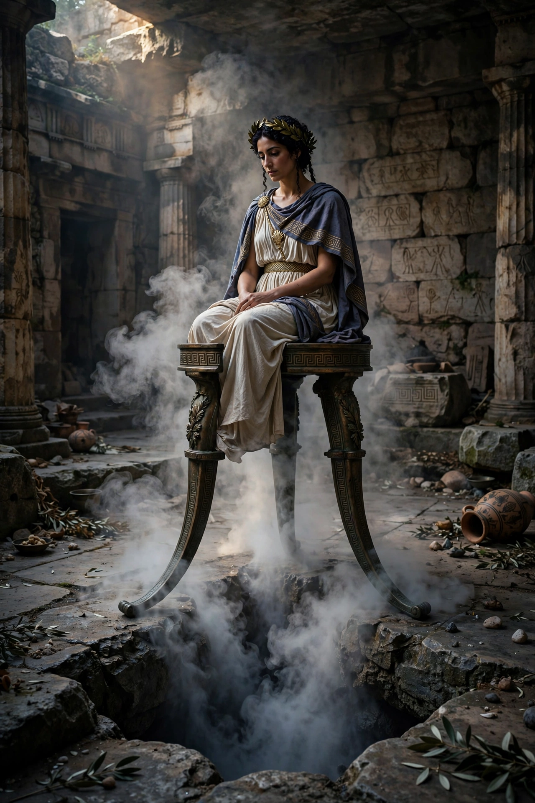

| Title | High priestess of the Temple of Apollo at Delphi |
|---|---|
| Role | Oracle (the "Delphic Oracle") |
| Seat | Adyton of the temple, seated on a tripod |
| Active period | c. 8th century BC – AD 393 |
| Selection | Local woman of Delphi, sworn to chastity in office |
| Consultations | Originally yearly, later monthly, on the seventh day |

The Pythia was the title of the high priestess of the Temple of Apollo at Delphi, who served as the god's oracle — the most prestigious and authoritative in the ancient Greek world. Chosen from among the women of Delphi, she delivered prophesies while seated on a tripod in the temple's inner sanctum (adyton), her utterances interpreted and versified by attending priests for the enquirers who travelled from across the Mediterranean.
Before a consultation the Pythia purified herself in the Castalian Spring, and a goat was sprinkled with water — if it trembled, the omens permitted the session. Seated over (according to ancient sources such as Plutarch, himself a priest at Delphi) a chasm emitting a sweet-smelling vapour or pneuma, she entered an altered state and spoke; her words were recorded as often ambiguous hexameter responses. Famous examples include the "wooden walls" oracle before Salamis and the reply to Croesus that he would "destroy a great empire" — his own.
Modern scholars have long debated the source of the Pythia's inspiration. Geological research published in 2001 proposed that fault lines beneath the temple released ethylene gas, which can induce euphoria and trance-like states; this hypothesis remains contested, with critics pointing to insufficient concentrations and alternative explanations including ritual expectation and chewing laurel.
The oracle operated for over a thousand years, from roughly the 8th century BC until the sanctuary was suppressed under the Christian emperor Theodosius I in AD 393. At its height, two or three Pythias served alternately. No Greek colony, law or war was lightly undertaken without her sanction.